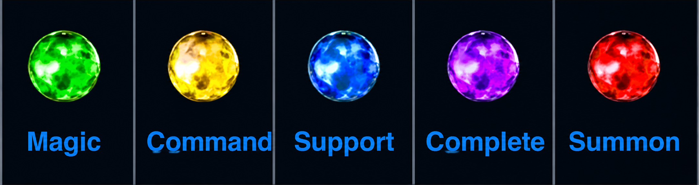

Final Fantasy VII Materia Guide
Understanding Materia
Materia is an important part of combat in Final Fantasy VII. It allows characters to use magic, special abilities, and other effects. Different Materia can be equipped to weapons and armor. Players can combine different types of Materia to create useful combat setups.
Materia comes in several colors that represent different categories. Green Materia is mainly used for magic while yellow Materia gives special commands. Purple Materia improves character abilities and statistics. Choosing the right Materia can make difficult battles much easier

Types of Materia
| Materia | Type | Purpose |
|---|---|---|
| Green Materia | Magic | Used for casting basic magic spells. |
| Yellow Materia | Command | Adds unique battle actions to the command menu |
| Purple Materia | Independent | Provides passive stat boosts or automatic bonus abilities |
| Red Materia | Summon | Calls upon powerful monsters into battle |
| Blue Materia | Support | Provides support abilities and enhancements during battle |